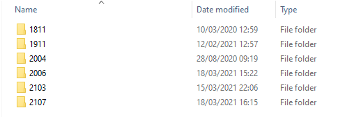
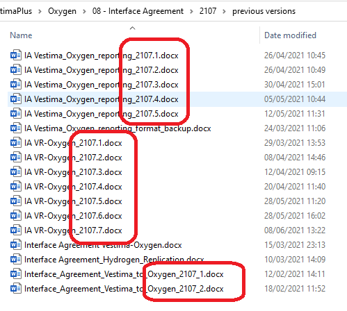
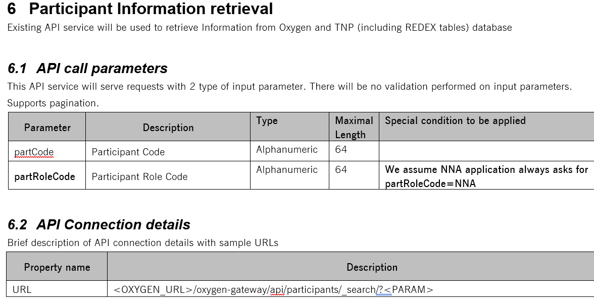
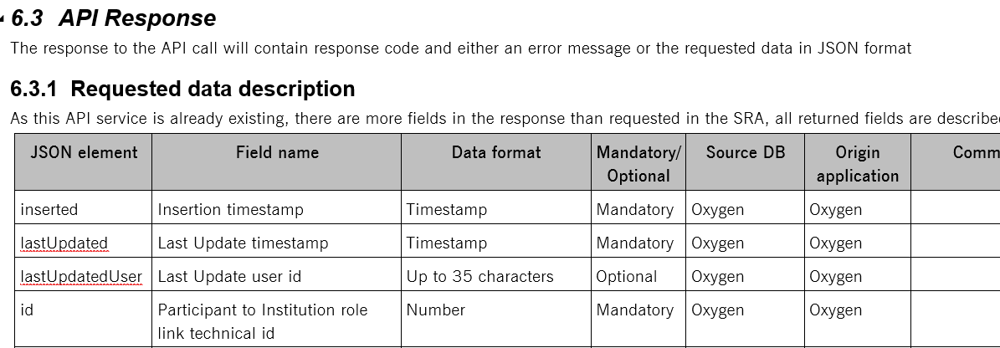
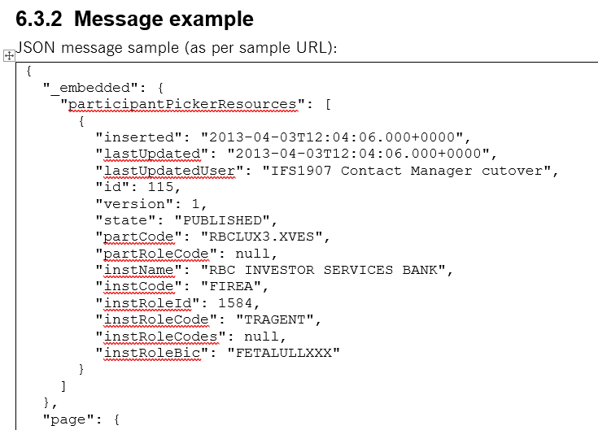
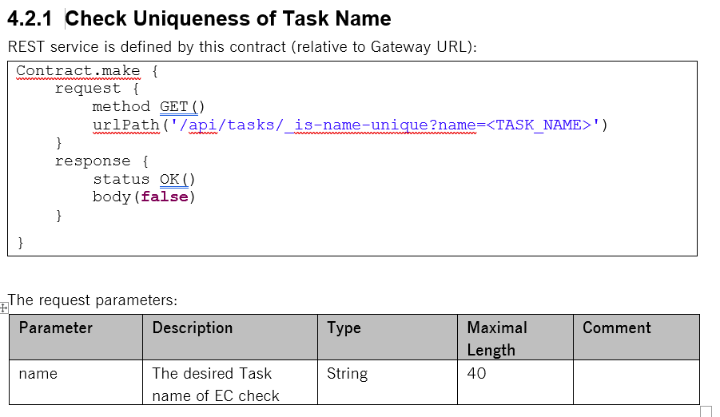
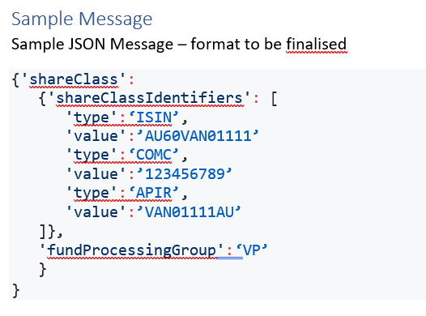
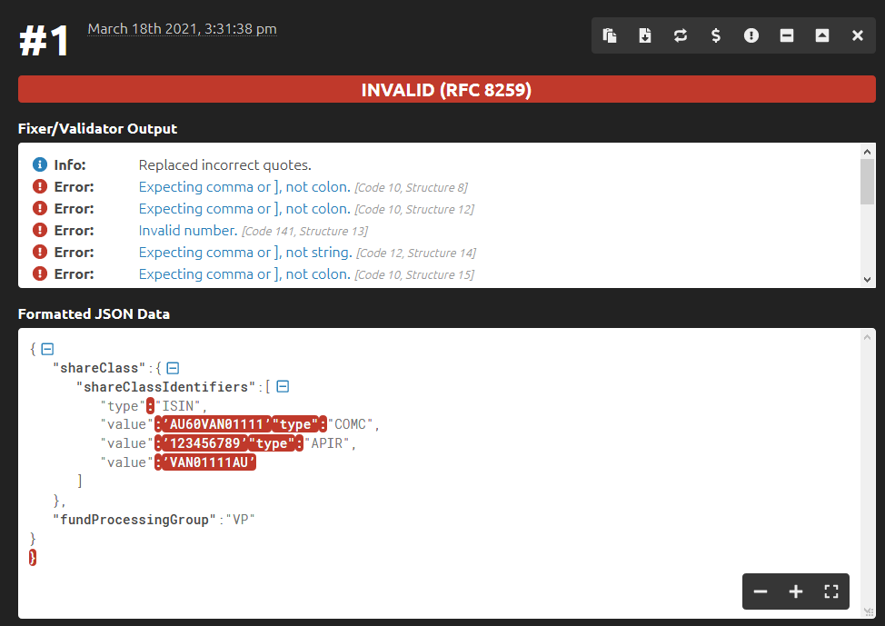

## REST API documentation #### The goal, requirements, tools & proposal Created by [Arnošt Havelka](https://github.deutsche-boerse.de/hh310)
## Agenda 1. Goal 1. IA documents 1. Requirements 1. Tools
## 1. Goal * Simplify **I**nterface **A**greement documents * Ensure up-to-date content * Promote automation * Promote versioning of IA documents
## 2. IA documents 1. Many versions 1. Different formats 1. Issues 1. ASIS Summary 1. Proposal
## 2.1 Many versions (1/2) <small>W:\Vestima\VestimaPlus\Oxygen\08 - Interface Agreement\2107</small> 
## 2.1 Many versions (2/2) 
## 2.2 Different formats (1/4) 
## 2.2 Different formats (2/4) 
## 2.2 Different formats (3/4) 
## 2.2 Different formats (4/4) 
## 2.3 Issues (1/2) 
## 2.3 Issues (2/2) ### Wrong JSON format 
## 2.4 ASIS Summary 1. Many documents (systems, versions) 1. Many different formats 1. No QA guaranteed (errors, up-to-date, etc.)
## 2.5 Proposal 1. Write only high level details without specifics (endpoint ID, purpose, security, etc.) 1. The API documentation (endpoint URL, request / response params) should be generated -> in order to achieve up-to-date content
## 3. Requirements 1. Related topics 1. Requirements 1. Additional objectives 1. Proposal 1. Summary
## 3.1 Related topics (optional) * REST API guideline as kicked off by Martin (email "IFS REST API response format agreement") * Documentation objectives (requirements, tools, storage, etc.) * Automaticaly generated client library for API
## 3.2 Requirements * Simplify and increase quality of IA documents * Document external APIs only * Integrate documentation into pipelines * Focus on the documentation itself (see: <a href="https://github.deutsche-boerse.de/pages/hh310/reveal.js/20181018-spring-rest-docs.html#/3/1">different concerns</a>)
## 3.3 Additional objectives * Highlight changes from previous version * Support different versions * Documentation available at all time (offline) * not linked to our demos (unavailable when DEMO is down) * linked to our demos (simplified access) * First contract approach - prepare the documentation as the first activity
## 4. Tools for specification 1. OpenAPI 2. Spring Cloud Contract 3. [GraphQL](https://graphql.org/) 4. [json:api](https://jsonapi.org/)
## 4.1 OpenAPI Specification [1/2] ### API-First Development with Swagger * https://reflectoring.io/spring-boot-openapi/ * https://dzone.com/articles/spring-boot-api-first-approach
## 4.1 OpenAPI Specification [2/2] ### Summary * (+) Real specification * Support for any language * More strict * Less flexible * (-) Very tight to the implementation (see **operationId**) * (-) Controllers generated automaticaly (missing security, mappers, etc.) * (-) Some unsolved issues <small>See: https://swagger.io/specification/,</small> <small>Vestima OpenApi: https://github.deutsche-boerse.de/dev/cs.vestima_gui/blob/release/2107/rest-api-generator/src/main/resources/open-api/oxygen.yaml or</small> <small>Oxygen Swagger: https://oxygen-develop-demo.ifs.dev.dbgcloud.io:13210/oxygen-task/swagger-ui.html</small>
## 4.2 Spring Cloud Contract * (+) Already used by Oxygen * (+) Stubs can be generated from it (not used in Oxygen now) * (-) Not real specification * (-) Some minor evaluation issues (with list) * (-) Transaction issues (see: [#PR 6371](https://github.deutsche-boerse.de/dev/cs.oxygen/pull/6371/files)) <small>See: Example: [Guideline](https://github.deutsche-boerse.de/dev/cs.oxygen/blob/develop/oxygen-task/src/test/resources/contracts/oxygen/task/guideline/shouldGetGuideline.groovy) example or <a href="https://docs.spring.io/spring-cloud-contract/docs/current/reference/html/">the reference documentation</a></small>
## 5. Tools for documentation 3. Spring REST Docs 4. OpenAPI Documentation
## 5.3 Spring REST Docs * (+) Real documentation * (-) Not specification * (+) Based on tests (request & response examples) * (+) It can indicate a missing description of the attribute * (-) The generation requires 2 steps (easy with Maven plugin) <small>See: my previous presentation for <a href="https://github.deutsche-boerse.de/pages/hh310/reveal.js/20181018-spring-rest-docs.html">Spring REST Docs</a> or <a href="https://docs.spring.io/spring-restdocs/docs/current/reference/html5/">the official documentation</a></small>
## 5.4 OpenAPI Documentation * (+) Well known * (-) Highly tight with code or just synthetical * (+) Easy to use * (-) Risk of API changes (see <a href="https://github.com/arnosthavelka/spring-advanced-training/pull/12/files">my PR</a>) <small>See: demo for <a href="https://oxygen-develop-demo.ifs.dev.dbgcloud.io:13210/oxygen-task/swagger-ui.html">TASK module</a> or <a href="https://www.baeldung.com/spring-rest-openapi-documentation">a tutorial</a></small> <small>See: https://swagger.io/solutions/api-documentation/</small>
## 6. Proposal 1. Specification * IA document for high level details (purpose, URL, security, etc.) * OpenAPI Specification for external API (Gateway module in Oxygen) 2. Documentation * Spring REST Docs (based on tests) * Extend our pipeline with documentation stage
Discussion
THE END
Thank you!